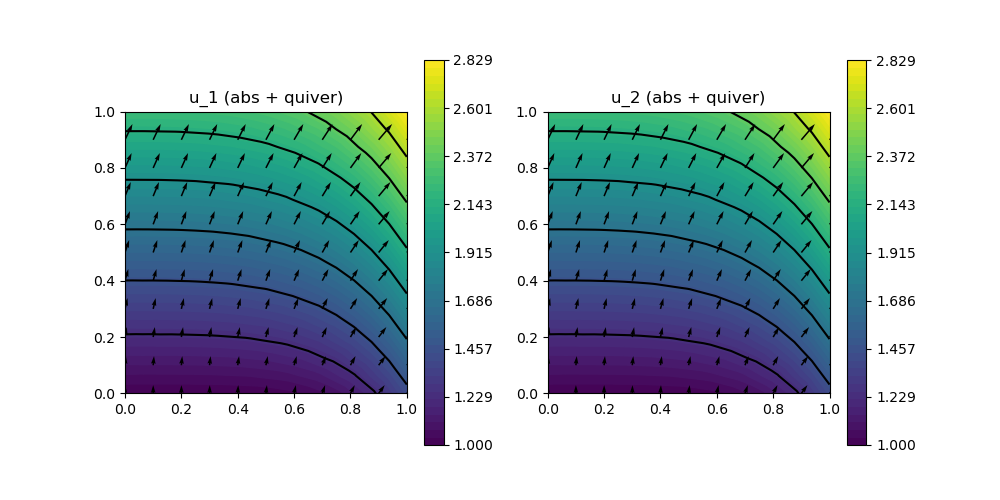

209 : Lagrange Multiplier on Faces
This code demonstrates the novel feature of finite element spaces on faces by providing AT = ON_FACES in the finite element space constructor. It is used here to solve a bestapproximation into an Hdiv-conforming space by using a broken Hdiv space and setting the normal jumps on interior faces to zero by using a Lagrange multiplier on the faces of the grid (a broken H1-conforming space). Then the solution is compared to the solution of the same problem using the continuous Hdiv-conforming space.
module Example209_FaceLagrangeMultiplier2D
using GradientRobustMultiPhysics
using ExtendableGrids
using GridVisualize
# problem data
function exact_function!(result,x::Array{<:Real,1})
result[1] = x[1]^3+x[2]
result[2] = x[2] + 1
return nothing
end
const u = DataFunction(exact_function!, [2,2]; name = "u", dependencies = "X", bonus_quadorder = 3)
# everything is wrapped in a main function
function main(; Plotter = nothing, verbosity = 0)
# set log level
set_verbosity(verbosity)
# choose initial mesh
xgrid = uniform_refine(grid_unitsquare(Triangle2D),3)
# define bestapproximation problem
Problem = L2BestapproximationProblem(u; name = "constrained L2-bestapproximation problem", bestapprox_boundary_regions = [])
# we want to use a broken space and constrain the normal jumps on interior faces
# in form of a Lagrange multiplier which needs an additional unknown
add_unknown!(Problem; unknown_name = "λ", equation_name = "face jump constraint")
add_operator!(Problem, [1,2], LagrangeMultiplier(NormalFluxDisc{Jump}; AT = ON_IFACES))
# the diagonal operator sets the Lagrange multiplier on all boundary face regions to zero
add_operator!(Problem, [2,2], DiagonalOperator(1; regions = [1,2,3,4]))
@show Problem
# choose some (inf-sup stable) finite element types
# first space is the Hdiv element that lives ON_CELLS
# second will be used for the Lagrange multiplier space that lives ON_FACES
FEType = [HDIVRT1{2}, H1P1{1}]
FES = [FESpace{FEType[1], ON_CELLS}(xgrid; broken = true),FESpace{FEType[2], ON_FACES}(xgrid; broken = true)]
# solve
Solution = solve(Problem, FES)
# solve again with the (unbroken) Hdiv-continuous element to test that we get the same result
# note: for an FESpace living ON_CELLS and broken = false is the default
Problem = L2BestapproximationProblem(u; bestapprox_boundary_regions = [])
Solution2 = FEVector("u_h (Hdiv-cont.)",FESpace{FEType[1]}(xgrid))
solve!(Solution2, Problem)
# calculate L2 error of both solutions and their difference
L2Error = L2ErrorIntegrator(u, Identity)
L2Diff = L2DifferenceIntegrator(2, Identity)
println("\tL2error(Hdiv-broken) = $(sqrt(evaluate(L2Error,Solution[1])))")
println("\tL2error(Hdiv-cont.) = $(sqrt(evaluate(L2Error,Solution2[1])))")
println("\tL2error(difference) = $(sqrt(evaluate(L2Diff,[Solution[1], Solution2[1]])))")
# plot both solutions
p = GridVisualizer(; Plotter = Plotter, layout = (1,2), clear = true, resolution = (1000,500))
scalarplot!(p[1,1],xgrid,view(nodevalues(Solution[1]; abs = true),1,:), levels = 7, title = "u_1 (abs + quiver)")
vectorplot!(p[1,1],xgrid,evaluate(PointEvaluator(Solution[1], Identity)), spacing = 0.1, clear = false)
scalarplot!(p[1,2],xgrid,view(nodevalues(Solution2[1]; abs = true),1,:), levels = 7, title = "u_2 (abs + quiver)")
vectorplot!(p[1,2],xgrid,evaluate(PointEvaluator(Solution2[1], Identity)), spacing = 0.1, clear = false)
end
endThis page was generated using Literate.jl.
Default output:
julia> Example209_FaceLagrangeMultiplier2D.main()
Problem =
PDE-DESCRIPTION
===============
system name = constrained L2-bestapproximation problem
id | unknown name / variables [#A, #T] / equation name
[1] | u / ["u", "v"] / L2-bestapproximation equation
[2] | λ / ["λ", "μ"] / face jump constraint
LHS block | PDEOperator(s)
[1,1] | (u,v) (APT = SymmetricBilinearForm, AT = ON_CELLS, regions = [0])
[1,2] | -(λ, [[NormalFlux]](v)) (APT = BilinearForm, AT = ON_IFACES, regions = [0], transposed copy to [2,1] with factor -1.0)
[2,1] | none
[2,2] | DiagonalOperator{Int64}
RHS block | PDEOperator(s)
[1] | (u, id(v)) (APT = LinearForm, AT = ON_CELLS, regions = [0])
[2] | none
BoundaryOperators[1] :
BoundaryOperators[2] :
┌ Info: ========== Solving constrained L2-bestapproximation problem ==========
│ Equation (1.1) L2-bestapproximation equation for u (discretised by HDIVRT1{2} (broken), ndofs = 2048)
└ Equation (1.2) face jump constraint for λ (discretised by H1P1{1} (broken), ndofs = 800)
[ Info: overall residual = 4.919723337850178e-16
┌ Info: ========== Solving L2-Bestapproximation problem ==========
└ Equation (1.1) L2-bestapproximation equation for u (discretised by HDIVRT1{2}, ndofs = 1312)
[ Info: overall residual = 4.3950229493262445e-16
L2error(Hdiv-broken) = 0.0004715248381994763
L2error(Hdiv-cont.) = 0.00047152483819947594
L2error(difference) = 5.610414426352323e-16